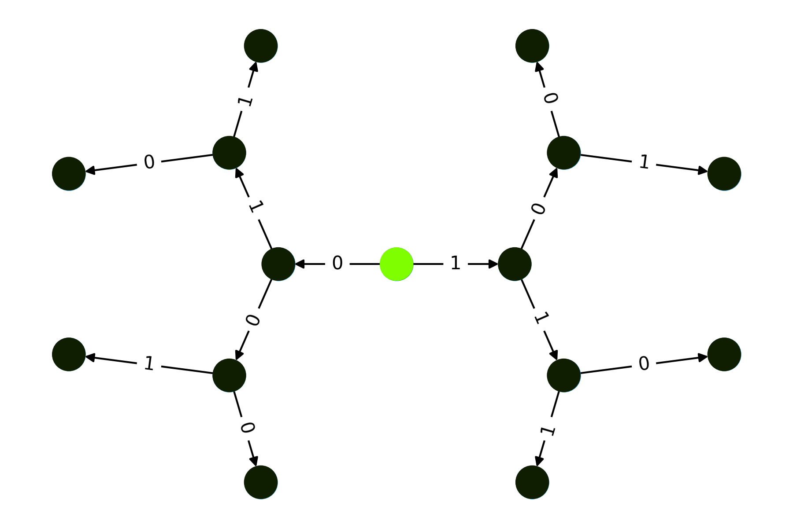

Quantum Backtracking#
- class QuantumBacktrackingTree(max_depth, branch_qv, accept, reject, subspace_optimization=False)[source]#
This class describes the central data structure to run backtracking algorithms in a quantum setting. Backtracking algorithms are a very general class of algorithms which cover many problems of combinatorial optimization such as 3-SAT or TSP.
Backtracking algorithms can be put into a very general form. Given is a maximum recursion depth, two functions called
accept/rejectand the set of possible assignments for an iterable x.from problem import accept, reject, max_depth, assignments def backtracking(x): if accept(x): return x if reject(x) or len(x) == max_depth: return None for j in assigments: y = list(x) y.append(j) res = backtracking(y) if res is not None: return res
The power of these algorithms lies in the fact that they can quickly discard large parts of the potential solution space by using the reject function to cancel the recursion. Compared to an unstructured search, where only the accept function is available, this can significantly cut the required resources.
The quantum algorithm for solving these problems has been proposed by Ashley Montanaro and yields a 1 to 1 correspondence between an arbitrary classical backtracking algorithm and it’s quantum equivalent. The quantum version achieves a quadratic speed up over the classical one.
The algorithm is based on performing quantum phase estimation on a quantum walk operator, which traverses the backtracking tree. The core algorithm returns “Node exists” if the 0 component of the quantum phase estimation result has a higher probability then 3/8 = 0.375.
Similar to the classical version, for the Qrisp implementation of this quantum algorithm, a backtracking problem is specified by a maximum recursion depth and two functions, each returning a QuantumBool respectively:
accept: Is the function that returns True, if called on a node, satisfying the specifications.
reject: Is the function that returns True, if called on a node, representing a branch that should no longer be considered.
Furthermore required is a QuantumVariable that specifies the branches that can be taken by the algorithm at each node.
Node encoding
An important aspect of this algorithm is the node encoding. In Montanaros paper a central quantity is the distance from the root \(l(x)\). This however doesn’t generalize well to the specification of subtrees, which is why we encode the height of a node. For example in a tree with maximum depth \(n\) a leaf has height 0 and the root has height \(n\).
This quantity is encoded as a one-hot integer QuantumVariable, which can be found under the attribute
h.To fully identify a node, we also need to specify the path to take starting at the root. This path is encoded in a QuantumArray, which can be found under the attribute
branch_qa. To fit into the setting of height encoding, this array contains the reversed path.We summarize the encoding by giving an example:
In a binary tree with depth 5, the node that has the path from the root [1,1] is encoded by
\[\begin{split}\begin{align} \ket{\text{branch_qa}} &= \ket{0}\ket{0}\ket{0}\ket{1}\ket{1}\\ \ket{\text{h}} &= \ket{3} = \ket{00010}\\ \ket{x} &= \ket{\text{branch_qa}}\ket{\text{h}} \end{align}\end{split}\]Details on the predicate functions
The predicate functions
acceptandrejectmust meet certain conditions for the algorithm to function properly:Both functions have to return a QuantumBool.
Both functions must not change the state of the tree.
Both functions must delete/uncompute all temporarily created QuantumVariables.
acceptandrejectmust never returnTrueon the same node.
The
subspace_optimizationkeyword enables a significant optimization of thequantum_stepfunction. This keyword can be set to True if therejectfunction is guaranteed to return the valuereject(x)also on the non-algorithmic subspace of x. For instance, if x = [0,0,1] in a depth 4 tree, the encoded state is\[\begin{split}\begin{align} \ket{\text{branch_qa}} &= \ket{0}\ket{1}\ket{0}\ket{0}\\ \ket{\text{h}} &= \ket{1}\\ \ket{x} &= \ket{\text{branch_qa}}\ket{\text{h}} \end{align}\end{split}\]A state from the non-algorithmic subspace of x is now a state that has non-zero entries in
branch_qaat indices less thanhie.\[\begin{split}\begin{align} \ket{\text{branch_qa}_{NA}} &= \ket{1}\ket{1}\ket{0}\ket{0}\\ \ket{\text{h}} &= \ket{1}\\ \ket{\tilde{x}} &= \ket{\text{branch_qa}_{NA}}\ket{\text{h}} \end{align}\end{split}\]For the
subspace_optimizationto return proper results, therejectfunction must therefore satisfy:\[\text{reject}(\ket{x}) = \text{reject}(\ket{\tilde{x}})\]Note
Many implementations of backtracking also include the possibility for deciding which entries of x to assign based on some user provided heuristic. The quantum version also supports this feature, however it is not yet implemented in Qrisp.
- Parameters:
- max_depthinteger
The depth of the backtracking tree.
- branch_qvQuantumVariable
A QuantumVariable representing the possible branches of each node.
- acceptfunction
A function taking an instance of QuantumBacktrackingTree and returning a QuantumBool, which is
True, if called on a satisfying node.- rejectfunction
A function taking an instance of QuantumBacktrackingTree and returning a QuantumBool, which is
True, if a called on a node where the corresponding branch should no longer be investigated.- subspace_optimizationbool, optional
If set to
True, a significant optimization of thequantum_stepfunction will be applied. The reject function has to fullfil a certain property for this to yield the correct results. Please check the “Details on the predicate functions” section for more information. The default isFalse.
- Attributes:
- hQuantumFloat
A one hot encoded integer representing the height of the node. The root has
h = max_depth, it’s children haveh = max_depth-1etc.- branch_qaQuantumArray
A QuantumArray representing the path from the root to the current node. The qtype of this QuantumArray is what is been provided as
branch_qv. Note that the state of this array is the reversed path, ie. a the node with path[1,1,0,1]in a depth 7 tree has the state: \(\ket{0}\ket{0}\ket{0}\ket{1}\ket{0}\ket{1}\ket{1}\) States that have a non-zero value at entries indexed smaller thanh, are considered non-algorithmic and will never be visited (eg. h=3, branch_qa = \(\ket{1}\ket{1}\ket{1}\ket{1}\)).- qsQuantumSession
The QuantumSession of the backtracking tree.
- max_depthint
An integer specifying the maximum depth of each node.
Examples
Checking for the existence of a solution
Even though primary purpose of backtracking algorithms is to find a solution, at the core, Montanaros algorithm only determines solution existence. This can however still be leveraged into a solution finding algorithm.
To demonstrate the solution existence functionality, we search the binary tree that consists only of nodes with alternating branching. We accept if we find the node
[0,0,1](doesn’t exist in this tree).For this we first set up the reject condition.
from qrisp import * @auto_uncompute def reject(tree): oddity = QuantumBool() for i in range(tree.h.size): if i%2: cx(tree.h[i], oddity) parity = QuantumBool() for i in range(tree.branch_qa.size): cx(tree.branch_qa[i], parity) exclude_init = (tree.h < tree.max_depth-1) return exclude_init & (oddity != parity)
This function determines first determines the oddity of the height parameter (remember
tree.hhas one-hot encoding!). Next the parity of the branching path is evaluated. Parity means “is the amount of ones in the path even or odd”.We will reject the node if the oddity of is unequal to the parity and therefore reject any path that took a 1 after it already took a 1 (same for 0).
On the root and it’s children there will be rejection to allow for two different paths.
We now implement the accept condition:
@auto_uncompute def accept(tree): height_condition = (tree.h == 0) path_condition = QuantumBool() mcx(tree.branch_qa[::-1], path_condition, ctrl_state = "001") return height_condition & path_condition
Subsequently we set up the class instance:
from qrisp.quantum_backtracking import QuantumBacktrackingTree tree = QuantumBacktrackingTree(max_depth = 3, branch_qv = QuantumFloat(1), accept = accept, reject = reject) tree.init_node([])
We can evaluate the statevector:
>>> tree.statevector() 1.0*|[]>
The
[]indicates that this is the root state. If the tree was in the state of a child of the root (say the one connected to the 1 branch) it would be[1].Note that the
statevectormethod decodes the QuantumVariables holding the node state for convenient readibility. If you want to see the encoded variables you can take a look at the QuantumSession sstatevector method:>>> tree.qs.statevector() |0>**3*|3>
We can also visualize the statevector of the tree:
>>> import matplotlib.pyplot as plt >>> tree.visualize_statevector() >>> plt.show()

And finally evaluate the algorithm:
qpe_res = tree.estimate_phase(precision = 4)
Perform a measurement
>>> mes_res = qpe_res.get_measurement() >>> mes_res[0] 0.1036
The 0 component has only 10.36% probability of appearing, therefore we can conclude, that in the specified tree no such node exists.
We now perform the same process but with a trivial reject function:
def reject(tree): return QuantumBool() tree = QuantumBacktrackingTree(max_depth = 3, branch_qv = QuantumFloat(1), accept = accept, reject = reject) tree.init_node([]) qpe_res = tree.estimate_phase(precision = 4)
>>> mes_res = qpe_res.get_measurement() >>> mes_res[0] 0.5039
We see a probability of more than 50%, implying a solution exists in this tree.
Finding a solution
Montanaros approach to determine a solution is to classically traverse the tree, by always picking the child node where the quantum algorithm returns “Node exists”. Finding a solution can therefore be considered a hybrid algorithm.
To demonstrate, we search for the node
[1,1,1]with a trivial reject function.@auto_uncompute def accept(tree): height_condition = (tree.h == tree.max_depth - 3) path_condition = QuantumBool() mcx(tree.branch_qa[-3:], path_condition) return height_condition & path_condition def reject(tree): return QuantumBool()
Set up the QuantumBacktrackingTree instance:
>>> max_depth = 4 >>> tree = QuantumBacktrackingTree(max_depth, branch_qv = QuantumFloat(1), accept = accept, reject = reject)
And call the solution finding algorithm:
>>> tree.find_solution(precision = 5) [1, 1, 1]
Using the subspace_optimization keyword
To demonstrate the usage of this feature, we create two tree instances - one with and one without the optimization.
def accept(tree): return QuantumBool() def reject(tree): return QuantumBool()
>>> opt_tree = QuantumBacktrackingTree(3, branch_qv = QuantumFloat(1), accept = accept, reject = reject, subspace_optimization = True) >>> no_opt_tree = QuantumBacktrackingTree(3, branch_qv = QuantumFloat(1), accept = accept, reject = reject, subspace_optimization = False)
Perform a
quantum_stepon both of them:>>> opt_tree.quantum_step() >>> no_opt_tree.quantum_step()
And evaluate some benchmarks:
>>> no_opt_tree.qs.compile().depth() 89 >>> no_opt_tree.qs.compile().cnot_count() 68
With the optimization these values are much better:
>>> opt_tree.qs.compile().depth() 48 >>> opt_tree.qs.compile().cnot_count() 38
{kind=link}
Methods#
Tree quantum operations#
|
Performs the operators \(R_A\) or \(R_B\). |
|
Performs the quantum step operator \(R_BR_A\). |
|
Performs |
|
Determines a path to a solution. |
Initializes the normalized version of the state \(\ket{\phi}\). |
|
Initializes the state of a given node. |
Tree evaluation#
Returns a SymPy statevector object representing the state of the tree with decoded node labels. |
|
Visualizes the statevector graph. |
|
Returns a NetworkX Graph representing the quantum state of the backtracking tree. |
Miscellaneous#
|
Returns the subtree of a given node. |
Returns a copy of self. |
|
Returns the path representation for a given constellation of the |